Handwriting Analysis Result Sheet
Character-level classification with Grad-CAM visual explanations
Prototype category: Progressing well Characters analysed: 105
Classification summary
Character-level results and Grad-CAM
Grad-CAM highlights image regions that contributed to the selected model class. The heatmap explains model behaviour; it is not a diagnosis or proof that the prediction is correct. Confidence is the raw model confidence; letter-aware rules may change the final class for some letters.
| # | Expected letter | Raw model class | Final class | Confidence | Rule applied | Grad-CAM: character / heatmap / overlay |
|---|---|---|---|---|---|---|
| 1 | i | Normal | Normal | 100.0% | No | 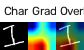 |
| 2 | h | Reversal | Reversal | 100.0% | No | 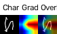 |
| 3 | a | Normal | Normal | 99.6% | No | 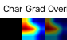 |
| 4 | v | Normal | Normal | 100.0% | No | 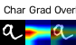 |
| 5 | e | Normal | Normal | 100.0% | No | 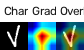 |
| 6 | a | Reversal | Reversal | 98.9% | No | 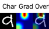 |
| 7 | l | Reversal | Reversal | 98.6% | No | 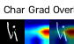 |
| 8 | i | Corrected | Normal | 94.1% | Yes | 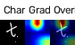 |
| 9 | t | Normal | Normal | 99.7% | No | 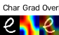 |
| 10 | t | Normal | Normal | 99.9% | No | 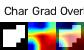 |
| 11 | l | Normal | Normal | 93.5% | No | 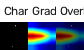 |
| 12 | e | Normal | Normal | 100.0% | No | 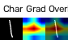 |
| 13 | d | Corrected | Corrected | 100.0% | No | 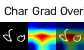 |
| 14 | o | Normal | Normal | 99.6% | No | 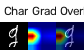 |
| 15 | g | Normal | Normal | 100.0% | No | 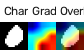 |
| 16 | h | Normal | Normal | 89.2% | No | 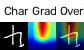 |
| 17 | i | Normal | Normal | 99.0% | No | 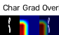 |
| 18 | s | Normal | Normal | 99.6% | No | 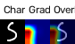 |
| 19 | n | Normal | Normal | 91.7% | No | 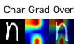 |
| 20 | a | Normal | Normal | 100.0% | No | 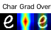 |
| 21 | m | Normal | Normal | 100.0% | No | 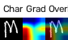 |
| 22 | e | Normal | Normal | 67.5% | No | 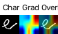 |
| 23 | i | Normal | Normal | 68.4% | No | 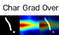 |
| 24 | s | Normal | Normal | 88.0% | No | 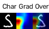 |
| 25 | b | Normal | Normal | 100.0% | No | 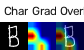 |
| 26 | r | Corrected | Corrected | 92.2% | No | 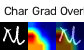 |
| 27 | u | Reversal | Normal | 100.0% | Yes | 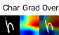 |
| 28 | n | Reversal | Reversal | 98.8% | No | 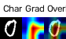 |
| 29 | o | Normal | Normal | 96.4% | No | 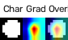 |
| 30 | h | Normal | Normal | 99.2% | No | 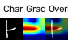 |
| 31 | e | Corrected | Corrected | 63.9% | No | 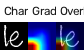 |
| 32 | l | Normal | Normal | 99.8% | No | 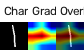 |
| 33 | i | Normal | Normal | 99.8% | No | 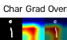 |
| 34 | k | Normal | Normal | 99.9% | No | 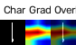 |
| 35 | e | Normal | Normal | 100.0% | No | 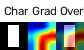 |
| 36 | s | Corrected | Corrected | 100.0% | No | 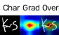 |
| 37 | t | Normal | Normal | 98.6% | No | 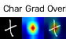 |
| 38 | o | Normal | Normal | 99.1% | No | 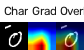 |
| 39 | r | Normal | Normal | 90.2% | No | 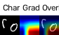 |
| 40 | u | Normal | Normal | 99.6% | No |  |
| 41 | n | Normal | Normal | 54.4% | No | 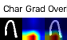 |
| 42 | a | Corrected | Corrected | 100.0% | No | 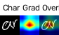 |
| 43 | n | Normal | Normal | 99.5% | No | 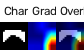 |
| 44 | d | Corrected | Corrected | 97.4% | No | 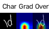 |
| 45 | p | Corrected | Corrected | 93.4% | No | 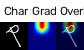 |
| 46 | l | Normal | Normal | 99.6% | No |  |
| 47 | a | Normal | Normal | 100.0% | No | 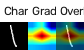 |
| 48 | y | Normal | Normal | 99.0% | No | 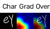 |
| 49 | i | Corrected | Normal | 100.0% | Yes | 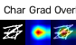 |
| 50 | n | Normal | Normal | 100.0% | No | 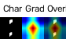 |
| 51 | t | Normal | Normal | 99.8% | No | 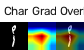 |
| 52 | h | Normal | Normal | 93.8% | No | 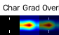 |
| 53 | e | Normal | Normal | 60.7% | No | |
| 54 | p | Normal | Normal | 70.4% | No | |
| 55 | a | Corrected | Corrected | 99.5% | No | |
| 56 | r | Normal | Normal | 99.6% | No | |
| 57 | k | Corrected | Corrected | 100.0% | No | |
| 58 | h | Corrected | Corrected | 100.0% | No | |
| 59 | e | Normal | Normal | 100.0% | No | |
| 60 | h | Normal | Normal | 99.2% | No | |
| 61 | a | Normal | Normal | 99.9% | No | |
| 62 | s | Normal | Normal | 100.0% | No | |
| 63 | a | Corrected | Corrected | 100.0% | No | |
| 64 | b | Normal | Normal | 100.0% | No | |
| 65 | i | Reversal | Normal | 91.6% | Yes | |
| 66 | g | Normal | Normal | 100.0% | No | |
| 67 | b | Normal | Normal | 99.2% | No | |
| 68 | r | Normal | Normal | 99.6% | No |  |
| 69 | o | Normal | Normal | 97.4% | No | |
| 70 | w | Normal | Normal | 88.1% | No | |
| 71 | n | Normal | Normal | 99.9% | No | |
| 72 | b | Corrected | Corrected | 97.1% | No | |
| 73 | a | Reversal | Reversal | 98.1% | No | |
| 74 | l | Normal | Normal | 99.9% | No | |
| 75 | l | Normal | Normal | 99.5% | No | |
| 76 | e | Corrected | Corrected | 99.8% | No | |
| 77 | v | Normal | Normal | 99.6% | No |  |
| 78 | e | Normal | Normal | 99.6% | No |  |
| 79 | r | Normal | Normal | 99.6% | No |  |
| 80 | y | Normal | Normal | 100.0% | No | |
| 81 | d | Normal | Normal | 100.0% | No | |
| 82 | a | Normal | Normal | 100.0% | No | |
| 83 | y | Corrected | Normal | 51.6% | Yes | |
| 84 | i | Corrected | Normal | 100.0% | Yes | |
| 85 | p | Reversal | Reversal | 91.3% | No | |
| 86 | l | Normal | Normal | 97.6% | No | |
| 87 | a | Normal | Normal | 99.7% | No | |
| 88 | y | Normal | Normal | 99.6% | No | |
| 89 | w | Normal | Normal | 100.0% | No | |
| 90 | i | Normal | Normal | 99.6% | No |  |
| 91 | t | Corrected | Normal | 98.5% | Yes | |
| 92 | h | Normal | Normal | 100.0% | No | |
| 93 | h | Normal | Normal | 100.0% | No | |
| 94 | i | Normal | Normal | 99.8% | No | |
| 95 | m | Normal | Normal | 73.9% | No | |
| 96 | n | Normal | Normal | 95.0% | No | |
| 97 | e | Reversal | Reversal | 77.6% | No | |
| 98 | a | Normal | Normal | 100.0% | No | |
| 99 | r | Normal | Normal | 100.0% | No | |
| 100 | m | Corrected | Corrected | 100.0% | No | |
| 101 | y | Normal | Normal | 83.1% | No | |
| 102 | h | Normal | Normal | 90.6% | No | |
| 103 | o | Reversal | Normal | 97.5% | Yes | |
| 104 | m | Normal | Normal | 100.0% | No | |
| 105 | e | Normal | Normal | 100.0% | No |